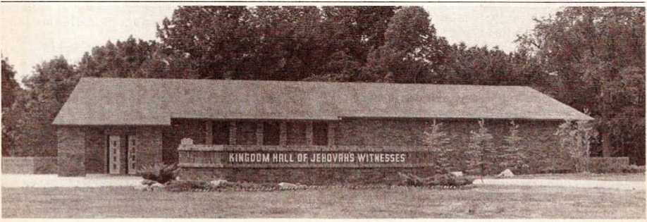
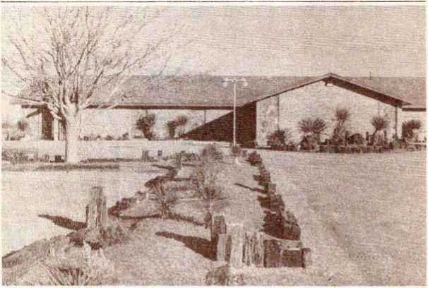

DECEMBER 1985
Vol. 28, No. 12
FOR UNITED STATES OF AMERICA
Meetings for Field Service
DECEMBER 2-8 Introductions
1. Why consider local customs?
2. What introductions have you found to be successful?
DECEMBER 9-15 How would you offer Creation book to
1. A churchgoer?
2. A nonreligious person?
3. An educator?
DECEMBER 16-22 How would you respond to 1. "I’m busy.i”
2. “You were here last week.”
3. “I have some of your literature.”
DECEMBER 23-29 During holidays, how will you 1. Respond to holiday greetings? 2. Show consideration for householders?
3. Use holiday activities to start discussions?
TOPIC FOR CONVERSATION
Security—Now and in the Future.
Prov. 1:33—Applying Jehovah’s counsel brings security.
Isa. 11:9—Earth-wide security promised.
OUTSTANDING NEW PEAK IN REGULAR PIONEERS
The September report shows 42,209 regular pioneers in the field, surpassing the August peak by nearly 5,000. Many new regular pioneer applications continue to be received in Brooklyn.
Be Versatile in Your Ministry
1 One who is versatile is able to turn with ease from one thing to another. Versatility implies being adjustable, adaptable, and resourceful. By our being versatile, we may be able to increase the amount of time we spend in preaching and teaching the good news, the number of people we reach, and the amount of good we accomplish.
2 As the great tribulation approaches, there is an urgent need for us to teach others the truth. We need to be versatile in scheduling time for field service. In some areas few people are at home during the daytime when most publishers engage in field service. How can we reach them? Can we adjust our schedule for field service to include afternoon or evening activity? Some congregations have had excellent results by arranging groups for evening field service or for Saturday and Sunday afternoons. Is evening witnessing practical in your territory?
3 A good witness may be given by talking to people who are waiting at bus stops, sitting in parked cars, window shopping, or just walking
Giving Attention to the Elderly and the Infirm
1 How strengthening it is to have in our midst numerous older brothers and sisters who have spent many years in faithful Kingdom service. Yes, those who over the years have gained experience in serving Jehovah are a source of encouragement to all of us. Their gray-headedness is indeed a crown of beauty and their presence an enrichment to the congregation. —Prov. 16:31.
2 While benefiting from the spiritual gifts that such older ones may have to offer, we must keep in mind that advancing years also bring problems of various kinds. (Eccl. 12:1-5) Are we attentive to the personal needs of our older brothers and sisters, and are we ready to render kind and loving assistance? (John 13:34, 35) Their needs may vary greatly.
3 At times the need may be for companionship to help dispel loneliness, but often they may require practical assistance with transportation, shopping, housework, or other routine chores or errands. Although spiritually strong, an older brother or sister may no longer be physically able to care for a number of necessary things. Others in the congregation, although not advanced in years, may need similar down the street. Our interest in people will move us to approach everyone we can with the good news of the Kingdom.—Matt. 9:35.
BE VERSATILE AT THE DOOR
4 While on your way up to the door, think of the need to be versatile in your conversation. Take time to look and listen. Is the home well cared for? Are there flowers or perhaps a garden? Toys? A symbol of religious devotion? When the door opens, we can observe whether the householder is male or female, young or elderly, busy or relaxed, and so forth. When the householder speaks, we can learn something about his interests, likes, dislikes, religious beliefs, concerns, or needs. People generally appreciate having their circumstances and viewpoints taken into consideration.
5 If the householder brings up an objection, it is usually wise to acknowledge it and perhaps discuss his viewpoint briefly. The book Reasoning From the Scriptures can help us in this. Information under the (Continued on page 2, col. 1) assistance because of being inflrm or physically handicapped.
HOW CAN WE HELP?
4 The primary responsibility for helping the elderly and the infirm rests upon family members and other relatives. However, spiritual brothers and sisters must show concern and be ready to help out. Providing transportation to the meetings is one way that help can be given. Association with our faithful older ones at meetings means a great deal to them, and if their health permits, they will eagerly accept your kind invitation to accompany you to the Kingdom Hall. Another way of showing loving-kindness is to extend hospitality by inviting older ones for a meal or just for Christian fellowship.
5 When field service arrangements are being made, do you try to include older ones? Their physical limitations may require you to select a territory that will not be too strenuous for them. Taking older publishers on return visits and Bible studies could be an encouragement to the householders. Usually the zeal of these older ones for the ministry has not diminished, and if we do what we can to arrange for (Continued on page 2, col. 3)
WEEK STARTING DECEMBER 1
Song 50
10 min: Appropriate Announcements from Our Kingdom Ministry and local announcements. Share an experience or two from the congregation’s work so far in offering the Creation book.
20 min: “Presenting the Good News —In December.” Apply to local circumstances. Questions and answers. Include one or two brief demonstrations showing how the tract can be used to introduce the offer.
15 min: “Kingdom Hall Expansion Program.” Question-and-answer discussion of first ten paragraphs of insert. Draw attention to pictures of Kingdom Halls that have been built in different states. Also, encourage congregation's continued participation in Society Kingdom Hall Fund. Song 36 and concluding prayer.
WEEK STARTING DECEMBER 8
Song 106
10 min: Local announcements. Accounts report. Encourage magazine work on second Saturday, December 14. All should bring Reasoning book to meeting next week.
15 min: “Find Refreshment for Your Souls.” Talk with audience participation. Include commendation of brothers for their diligence in some
Ba Versatile (Cont’d)
headings “Creation" and “Evolution” will be particularly helpful in December while working with the Creation book.
6 As suggested in the November 1985 issue of Our Kingdom Ministry, many publishers will be using the new tract, Kingdom News No. 33, for introducing the Creation book. Others may wish to use the book itself to stimulate interest. After citing an interesting point in the tract, you could direct the person’s attention to chapter 4, entitled “Could Life Originate by Chance?” and read paragraph 1. Then you could say that this chapter considers comments from evolutionists about the possibility of life originating by chance. Reference could be made to preselected subheads, marginal quotes, or illustrations that you believe would whet the householder’s appetite to read this book.
7 Versatility will be needed in order to adapt the Topic for Conversa-specific ways in which they extend themselves to attend all the meetings and share in field service regularly.
20 min: “Kingdom Hall Expansion Program.” Question-and-answer discussion of paragraphs 11-18 of insert. When discussing paragraphs 15 and 16, comment on maintenance of local Kingdom Hall.
Song 48 and concluding prayer.
WEEK STARTING DECEMBER 15
Song 37
5 min: Local announcements and Theocratic News.
15 min: Holiday Witnessing. Three well-prepared demonstrations showing practical value and use of Reasoning book. Comment briefly on need to be prepared to meet objections and to answer sincere questions related to specific holidays, (pp. 176-82) Demonstrate use of material under (1) “Date of the celebration” on pages 176-7; (2) “Is there any objection to sharing in celebrations that may have unchristian roots as long as it is not done for religious reasons?” on pages 178-9; and (3) “Are New Year’s celebrations objectionable for Christians?” on page 180. Use a different setting or circumstance for each demonstration.
15 min: “Be Versatile in Your Ministry.” Talk with some audience partion to the different people you may meet in field service. Chapter 19 can be tied in nicely with the current Topic for Conversation.
8 How can we offer the Creation book to those who do not believe in evolution? You could ask them why a loving God permits so much suffering in the world. Then turn to paragraph 1 on page 188 and show that this question is discussed in the book. Or you may wish to turn to page 191, read paragraph 8, and compare the illustrations of Adam and Eve on pages 189 and 191. Help the householder to appreciate that this chapter gives a reasonable and Scriptural answer explaining why God permits suffering.
9 As you can see, there are good reasons for us to be versatile in our ministry. By our diligent preparation and our effort to be versatile in our schedule for field service, as well as in our presentations, we can show genuine love for people and be more effective in preaching the good news. ticipation. Demonstrate presentations in paragraphs 6 and 8.
10 min: “The Theocratic Ministry School for 1986.” Talk by school overseer, covering information in article and reviewing other key points that may need attention locally. Encourage all to become familiar with the instructions set out for the Theocratic Ministry School for 1986. Encourage enrollment by those who qualify.
Song 20 and concluding prayer.
WEEK STARTING DECEMBER 22
Song 89
10 min: Local announcements. Include encouragement for field service on fourth Saturday with magazines. Present two well-prepared 30- to 60-second demonstrations of magazine presentations suitable for your local territory. One of them should be simple enough for a child to use.
20 min: “Giving Attention to the Elderly and the Infirm.” Questions and answers. Consider practical ways the local congregation can apply material.
15 min: Local needs, or present talk on “Independence From God—Why Not?” based on first two articles in November 1, 1985, Watchtower. Apply information to local congregation.
Song 99 and concluding prayer.
Giving Attention (Cont’d)
them to share, they will be happy for the opportunity and contribute to the witness given.
6 Those not able to attend the meetings regularly no doubt sense the loss of association with their brothers. Could some measures be taken to share highlights from the meetings with them? They will also appreciate receiving the latest publications. If the older one has failing eyesight, he may appreciate having someone read portions of the Bible and the Society’s publications to him.
7 Just to know that we care can mean so much. A brief, upbuilding visit or phone call can uplift the spirits of someone confined to home. You will likely find that your own joy will increase as in this way you follow the Biblical command at 1 John 3:18 to love “in deed and truth.” May Jehovah bless all you do to assist our faithful older and infirm ones.
Copyright © 1985 by Watchtower Bible and Tract Society of New York, Inc., and International Bible Students Association. Our Kingdom Ministry (USPS 295-360) is published monthly by Watchtower Bible and Tract Society of New York, Inc., 25 Columbia Heights, Brooklyn, N.Y. 11201. Second-class postage paid at Brooklyn, N.Y., and at additional mailing offices. POSTMASTER: Send address changes to Watchtower, 25 Columbia Heights, Brooklyn, N.Y. 11201. Printed in U.S.A.
Kingdom Hall
Expansion Program
1 Imagine the great joy of the Israelites when the building work on Jerusalem’s wall was completed! The inspired account tells us: “They proceeded to sacrifice on that day great sacrifices and to rejoice, for the true God himself caused them to rejoice with great joy.” (Neh. 12:43) The returning Israelites had trusted in Jehovah. Despite adversity they had gone forward with the work assigned. What an evidence of Jehovah’s blessing upon their loyal efforts when the building work was completed in just 52 days!
2 Likewise today, there is cause for rejoicing when we reflect upon the good that Jehovah’s servants have accomplished in the Kingdom Hall expansion program in the United States. During just the past two years, over 300 new Kingdom Halls have been built in 47 states and over 100 existing Kingdom Halls have been remodeled so as to provide additional seating. The Society Kingdom Hall Fund has assisted in financing some of this new construction, and other Society funds have been used for remodeling projects. In many cases, the local brothers have provided needed financing or they have obtained it from other sources. So, at this writing, construction on 414 new or remodeled Kingdom Halls has been completed. Another 62 new Kingdom Halls are scheduled to be built in the near future. Yes, we, too, have reason to “rejoice with great joy”!
3 This important work is being accomplished through the united efforts of integrity-keeping Witnesses throughout the land. Outsiders have taken note of the organizational unity demonstrated by Jehovah’s people as they work together on their Kingdom Halls. One city building inspector in Ohio stated: “I was impressed with the preplanning. Everybody’s got their job, they know what to do and they’re doing it.... There’s nothing to compare it to.” And to whom does the credit go? It is to our God and Father, Jehovah. He has been blessing us in this work as we lovingly give of ourselves and our resources.
4 The news media has commented extensively upon what has been observed. A Colorado newspaper editorial said: “Teamwork was never more evident than it was last weekend when the local congregation of Jehovah’s Witnesses and their friends built their new Kingdom Hall. . . . Such a project might have been considered impossible by some, but seeing is believing, as a whole community can now attest.... It should also provide an inspiring example to others as to what teamwork can accomplish. One person alone has limitations as to what he or she can accomplish, but a unified team can produce results which stagger the imagination.”
5 In New Hampshire, a newspaper writer commented at length on what he had observed at a Kingdom Hall construction site. Among other things, he wrote: “I am not easily impressed by cooperative ventures. ... They all seem to crumble because too many members want a free ride while only a few are pushing the wagon.... This is the prejudice I brought with me to watch the Jehovahf’s] Witnesses build a new Kingdom Hall this past weekend. . . . I arrived with a lot of doubts —and went away happily surprised. ... It was a very cordial and polite construction crew. They all wore hard hats but did not engage in the usual profanities associated with men on rafters. All the work performed this weekend was free. Nobody was getting a pay check. ... It was amazing to watch so many people working on one building.”
Indiana—Kingdom Hall quickly built with assistance of Society Kingdom Hall Fund
3
OUR KINGDOM MINISTRY, DECEMBER 1985
KINGDOM HALL REPORT
G Generosity has always been an identifying characteristic of spiritually-minded individuals. (2 Cor. 9:1-5) You will be encouraged to know that the Society Kingdom Hall Fund has been used to assist in building new Kingdom Halls in 40 states, providing accommodations for over 150 congregations. These congregations may not otherwise have been able to obtain financing. The goal of the Society Kingdom Hall Fund is not just to provide financing at a reasonable cost but to do so for congregations that would find it difficult or impossible to obtain the necessary funding elsewhere.
7 It would be good for congregations to exercise care regarding “interim financing” or other forms of shorter-term loans on new construction projects. The desire to proceed with a building project is certainly understandable. Yet, such temporary financing should not be obtained through commercial banks or loan associations unless the congregation has first contacted the Society for assistance and been advised to do so. Congregations faced with urgent remodeling or repair needs can contact the Society, since some funding is available for such projects from time to time on a limited basis.
CONTINUED ASSISTANCE NEEDED
8 We rejoice that 168 new congregations were formed in the United States during the 1985 service year. (Isa. 54:2) This means that more Kingdom Halls are needed for these new congregations. Additionally, there are still 1,081 congregations that meet in Kingdom Halls that
Missouri
are shared by three or more congregations. Even though the brothers are displaying a loving, cooperative attitude as halls are used efficiently in these circumstances, it will be a fine thing when additional facilities are provided.
9 Although much has been accomplished already, there is still an urgent need in the United States for more Kingdom Halls. Each of us has the opportunity to demonstrate the same zealous spirit that Haggai and his brothers manifested when working on the temple after the Jews returned to their homeland. (Ezra 6:14; Hag. 1:3, 4, 8) We can assist in keeping our Kingdom Hall clean and presentable. It may be that we can help with the maintenance and periodic improvement of the Kingdom Hall. By our regular contributions to the Society Kingdom Hall Fund, we can give another evidence of our brotherly love and assist in building new Kingdom Halls nationwide. (Matt. 22:39; John 13: 34, 35) If new labels for identifying the Society Kingdom Hall Fund contribution box are needed, they can be requested from the Society by writing to the Kingdom Hall Desk.
10 All contributions made to the Society Kingdom Hall Fund should be forwarded to the Society each month. As these contributions accumulate, arrangements are made to provide loans to congregations needing assistance. The contributions received are used solely to assist in the construction of needed Kingdom Halls. When congregations that have received these loans make repayment to the Society, the funds can again be lent to help still other congregations. So funds contributed to the Society Kingdom Hall Fund will be used time after time in building one Kingdom Hall after another.
WILLING WORKERS ACCOMPLISH THE TASKS
11 While the success of the Kingdom Hall building program is due in part to the money provided by the Society Kingdom Hall Fund, much more than that is involved. All these new centers of true worship scattered throughout the country have required many thousands of hours of volunteer labor. In this, also,
Variety in architecture of Kingdom Halls built in last two years
the brothers have proved to be exceedingly generous, especially over the past two years.
12 In various areas of the country, trained groups of brothers have been organized to assist congregations in building Kingdom Halls quickly, perhaps completing a project in just one weekend. Regional building committees have helped greatly with such work. Many brothers have volunteered their time and energies to help. All who are doing this are to be commended for their demonstration of loving concern. Such brothers, however, are encouraged to exercise sound judgment and to be balanced in what they do. Many have family responsibilities as well as assignments to care for in their respective congregations. They must continue to have a full share in the field ministry. (Matt. 24:14; 28:19, 20) Therefore, congregations needing assistance should also approach their Kingdom Hall project in a balanced manner. While there may be a desire to build as soon as possible, unreasonable demands should not be made on the skilled workers, insisting that they help right away. Rather, all should participate according to a scheduled arrangement. Some may even find it necessary to delay their construction project temporarily so that matters can proceed in an orderly manner without becoming burdensome to others.
13 Israel was commended for completing the tabernacle construction assignment “just so.” (Ex. 39:32, 43) Likewise today, it should be our desire to provide quality-built Kingdom Halls. Rather than engaging in a spirit of competition to ‘see how fast it can be done,’ Jehovah’s people endeavor to ‘see how well Kingdom Halls can be built,’ although they are also built in a relatively short period of time. It is recommended that Kingdom Halls be modest, suitable houses of worship, not extravagant in size or style, not wasteful of dedicated resources.
14 We rejoice with a congregation that is engaged in a building or remodeling project. Nevertheless, it shows both kindness and consideration to the brothers who are working on the project if we do not travel to the construction site simply to be spectators. If we cannot participate in the work at hand in a meaningful way, it would be best to share in field service activities with our local congregation.
MAINTAINING OUR KINGDOM HALLS
15 Just as faithful Israelites worked to keep the temple of Jehovah in good repair, so today congregations of Jehovah’s people exercise care so that the condition of the Kingdom Hall does not deteriorate. (2 Chron. 24:13) While failure to maintain the Kingdom Hall in good condition could result in substantial financial loss, of even more importance is how the Kingdom Hall reflects on Jehovah, his people, and the Kingdom message. Individuals who attend for the first time often make judgments based on what they observe. What will be their reaction to your Kingdom Hall? Does it need to be repainted? What is the condition of the seats, the carpet, the drapes?
16 All congregations have been provided with direction on the maintenance and repair of the Kingdom Hall. Additionally, the Society communicates from time to time with the body of elders, reviewing important maintenance requirements. Of course, there are matters to which the elders should always be alert. Is the roof in good repair? What about the plumbing, air conditioning, heating, and electrical systems? Are these all in good working order? At least once a year the elders should carefully check on these matters.
17 When a congregation finds that it has outgrown its present Kingdom Hall, what should be done? The body of elders should
give careful consideration to all the options that are available. For example, though the Kingdom Hall may be crowded, the present location may be good. The site may be readily identified by the community and easily accessible to most. Therefore, the congregation may wish to give serious consideration to major remodeling rather than sale and new construction. This may allow the congregation to satisfy its present needs as well as provide for growth in the future. Generally, remodeling can be accomplished at less cost in time and money. Buying another property and building a new Kingdom Hall also involves the associated problem of trying to sell the old facility. Of course, as these matters are analyzed, there are many factors to be taken into consideration and all possibilities should be carefully weighed.
Texas and Kentucky—Both Kingdom Halls quickly built in September 1984 with assistance of Society Kingdom Hall Fund
18 Yes, still more Kingdom Halls are needed. As a united organization working through the Kingdom Hall expansion program, we can meet this challenge. The Society Kingdom Hall Fund has been a great aid in getting this program on the move. As we continue to give freely of our time and resources, we will look to Jehovah to bless our united efforts, to his praise. —2 Cor. 9:6, 7.
• Literature offer for December: Life —How Did It Get Here! By Evolution or by Creation! for a contribution of $2.50. Kingdom News No. 33 will also be distributed. It may be used to introduce the book offer, left where no one is at home, or given free of charge to any who wish to read it. January and February: Watchtower subscription for a contribution of $4.00. Where subscription is not obtained, two magazines and a copy of the brochure The Government That Will Bring Paradise will be offered for a contribution of 70e. March: Any of the older pocket-size books for a contribution of $1.00.
e Presiding overseer should arrange to have MEDICAL ALERT cards distributed at beginning of the Service Meeting the week of January 5. Brother handling announcements can give brief reminders concerning use of card as expressed in letter dated July 20, 1980. Post letter on information board for a week or two. Brothers are encouraged to fill out card promptly, having it properly signed, witnessed, and dated.
• The presiding overseer or someone designated by him should audit congregation’s accounts on December 1, or as soon as possible thereafter.
• It is suggested that all congregations display the new yeartext by January 1, 1986.
• The special public talk for the 1986 Memorial season will be given worldwide on Sunday, March 9. The subject of this talk will be “The World’s Insecurity—Is There a Solution?” An outline will be provided as soon as possible. Those congregations having the visit of the circuit overseer or a circuit assembly scheduled that week will have the special talk the following week. No congregation should have the special talk before March 9.
• Bound Volumes of The Watchtower and Awake! for 1985: Publishers and pioneers, please order your volumes through your congregation. Congregations should begin collecting requests for these volumes now. Then, on January 1, 1986, or as soon as possible thereafter, send this order to the Society, using the regular Literature Order form (S-14). Order only the number of bound volumes for which you have requests. The bound volumes will be available in Dutch, English, French, German, Italian, Japanese, Portuguese, and Spanish at $5.00 each. There is no pioneer rate. Payment should not accompany the congregation order sent to the Society. (See the Cost List, paragraph 23.) Until the bound volumes are available and shipped, they will appear as “Back Ordered” on congregation invoices. Please announce to the congregation when the bound volumes are received so that all who ordered can obtain their copies.
• New Publications Available:
Life—How Did It Get Here! By Evolution or by Creation! —Dutch,
Italian, Japanese Reasoning From the Scriptures
—Danish, German, Norwegian You Can Live Forever in Paradise on Earth (Small size) —Chinese
Enjoy Life on Earth Forever!
—Kalanga
• New Cassette Recordings Available:
Ezra, Nehemiah, Esther (set of two; congregation and public: $3.00; pioneers: $2.50) —English
“Find Refreshment for Your Souls”
1A man toiling and loaded down is inclined to seek refreshment by making a change. That is what Jesus Christ invites people to do. All who take on Jesus’ “yoke” and become his disciples truly ‘And refreshment for their souls.’—Matt. 11:28-30.
2 Doubtless many of us are very busy taking care of necessary concerns each day. Family heads have to make honest provision for their household. Housewives are busy with many duties. Even the children are occupied with school, homework, and chores. Truly, we are very busy people. However, what is it that refreshes us and brings us happiness? Is it not having a regular and meaningful share in congregation meetings and in the field ministry?
CHRIST’S YOKE REFRESHES
3 Jesus’ invitation at Matthew 11:29 can be rendered: “Get under my yoke with me and become my disciples.” (Rbi8 footnote) So Christ’s yoke that we are invited to take on means a life of complete dedication to God as disciples of Jesus Christ. (Matt. 16: 24-26) But how does this refresh the soul?
4 The refreshment we receive is primarily an inward experience of joy with reassurance that as disciples of Christ we are in a close relationship with Jehovah God. It is the peace of mind that we enjoy from knowing the truth and being doers of the work. (Jas. 1:25) It is a deep calming of the heart and a contentment in life that excels all thought.—John 14: 27; Phil. 4:6, 7.
5 In the Christian congregation, the theocratic principle of headship is observed. This reflects the fact that “God is a God, not of disorder, but of peace.” (1 Cor. 14:33) Refreshing peace and order are evident in our congregation
Schedule for congregation studies in the book United in Worship of the Only True God:
December 1: Pages 33, par. 9 to 39
December 8: Pages 40 to 45
December 15: Pages 46 to 52, par. 11
December 22: Pages 52, par. 12 to 57
December 29: Pages 58 to 65, par. 8
7 meetings. Although brothers and sisters may be exhausted after a long day of work, they know from experience that they will be refreshed at the congregation meetings. They also know that by arriving on time and sharing in the meetings, they contribute to the peace and refreshment of others. —Prov. 10:22; Isa. 48:17.
6 Theocratic households also provide refreshment and are blessed by Jehovah. Parents who are alert to the activities, conduct, and needs of their children can build them up spiritually by means of a regular family Bible study and regular meeting attendance.' (Eph. 6:4) Parents and others can train the children in field service and help them to experience the joy that comes from sharing the truth with others. The first Sunday of the month is an excellent time for the whole family to be together in field service. Husbands and fathers are a source of refreshment when they take the lead in spiritual matters. (1 Cor. 11:3) This includes overseeing arrangements for study and service as well as recreation. Wives and mothers can accomplish much good by closely cooperating with and supporting these arrangements. The result will be theocratic order and refreshment for all.—Eph. 5:22; 6: 2, 3.
7 By imitating Jehovah God and Jesus Christ, all true disciples refresh others with the truth and show personal concern for all “who are toiling and loaded down.” In addition to fellow Christians, show consideration for the people in your territory and wherever you may go. (Matt. 5: 43-45; Rev. 22:17) Be zealous in the Christian ministry. Accept Christ’s invitation and “find refreshment for your souls.”
SEPTEMBER SERVICE REPORT
|
Pubs. |
Av. Hrs. |
Av. Mags. |
Av. R.V. |
Av. Bi.St. | |
|
Sp’l Pios. |
285 |
130.6 |
95.1 |
52.7 |
5.5 |
|
Pios. |
42,209 |
85.8 |
48.9 |
29.5 |
3.0 |
|
Aux. Pios. |
46,361 |
60.0 |
33.4 |
16.2 |
1.4 |
|
Pubs. |
601,651 |
9.6 |
7.2 |
3.5 |
0.4 |
TOTAL 690,506
Newly Dedicated Ones Baptized: 2,312
PRESENTING THE GOOD NEWS
In December
1 Witnessing during December often presents special challenges in some parts of the country because of inclement winter weather, along with the world’s holiday season. Are you prepared to meet these challenges?
2 If the weather in your part of the country becomes severe during December, what will you do to cope with the circumstances and thus “fully accomplish your ministry”? How will you present the good news to people who may be observing the holidays?
THE KEY
3 Good judgment and a positive attitude will be key factors. If the weather is severe, prepare well for service by dressing appropriately. Some congregations have apartment territory that can be worked thoroughly during periods of inclement weather. Car groups working other territories can make necessary arrangements so that publishers are protected from harmful weather elements without losing much time in field service. In some territories it may be advantageous to ask the householder if you can step inside for a moment to explain the reason for your call.
HOLIDAY WITNESSING
4 Of course, December brings with it the worldly holiday season. Some people may be more inclined to converse about religious matters. We do well to take advantage of this, perhaps incorporating comments such as: “We note at this time of year that many people are particularly concerned about subjects dealing with religion.” You could ask, “Do you find in your community today that people think less about God? [Allow for response.] Why do you think that is so?” After the householder responds, you could continue with your discussion and offer the Creation book.
5 Holidays provide time off from secular work and school, opening up additional opportunities to spread the good news. Elders will want to make special arrangements for field service on these days. It is good to remember, however, that when we call early in the morning on a holiday, we may disturb people who want to sleep late. It may be wise to start your house-to-house activity a little later than usual. Remember, too, that if people wish you a happy holiday, it would not be wise to offend them unnecessarily with regard to their attitudes about holidays. If they specifically ask how you feel about the subject, you can answer truthfully and respectfully. Information on pages 176-8 of the publication Reasoning From the Scriptures will no doubt be helpful.
6 On magazine days in December we will also have the opportunity to offer the excellent articles in the December issues of The Watchtower and Awake! By reading these magazines and becoming familiar with the articles well in advance, we will be in a position to offer them in an appealing way.
7 Although the weather and local holiday customs may present special problems, these will not deter Jehovah’s people from zealously presenting the good news. During December we hope to accomplish much in Jehovah’s service and to be refreshed with his favor.—Matt. 25:21-23.
The Theocratic Ministry School for 1986
1 The progressive training offered in the Theocratic Ministry School over the past 42 years has contributed greatly to the effectiveness of the worldwide witness concerning Jehovah’s Kingdom. If you qualify but have not yet enrolled, we urge you to do so now. The Theocratic Ministry School Schedule for 1986 was distributed with the October Our Kingdom Ministry. Everyone in the congregation should read over the instructions carefully and be resolved to take full advantage of this excellent organizational provision.
2 New ones and others needing help in preparing their assignments should feel free to approach the Theocratic Ministry School overseer and make him aware of the need. He will be happy to give assistance personally, or he will arrange for another qualified brother to do so. But it is important that each student demonstrate initiative, determination, and a willingness to work hard in preparing his assignments. If you attend regularly, view your assignments seriously, and fulfill each
THEOCRATIC NEWS
• Argentina reported an all-time peak of 55,201 publishers In July, a 14-percent increase.
♦ Brazil reached their sixth publisher peak for the 1985 service year, with 177,904 reporting In July. They report their 24th consecutive peak of regular pioneers, as well as an all-time peak of 187,476 Bible studies.
• In Colombia, a new peak of 25,962 publishers shared In the ministry, conducting an all-time peak of 36,904 studies and making a record number of 198,303 return visits.
* Two conventions in Cyprus were attended by 1,539, and 33 were baptized. This compares well with the 1,076 publishers reporting.
♦ El Salvador reached new peaks of 14,002 publishers and 21,473 Bible studies during July. The neighboring land of Guatemala also reported all-time peaks of 8.074 publishers and 9,052 studies for the month.
• In Guadeloupe, 9,313 attended the district convention and 233 were baptized. They had 4,005 publishers reporting during July.
• Haiti had Its sixth peak of publishers for the service year with 4,048 reporting. Peaks In return visits and auxiliary pioneers were also reported during July.
• In July, Hong Kong reported a new peak of 1,282 publishers, even though many of the brothers were on vacation and one of the district conventions was held.
• In July, Srl Lanka reported new peaks of 886 publishers and 1,079 studies.
one, you will make advancement in your ministry. Such participation will also be of benefit to others in the congregation.
3 The Theocratic Ministry School overseer, other elders, and qualified ministerial servants are given Assignment No. 1 and highlights from the Bible reading. Assignment No. 1 consists of a ten-minute instruction talk followed by a five-minute question-and-answer review of material in the book "All Scripture Is Inspired of God and Beneficial.” Highlights from the Bible reading will help the audience to appreciate why and how the assigned material is valuable to us. Although there may be an occasional involvement of the audience, primarily the speaker himself will present information that he has carefully researched and prepared. The brothers handling these parts will need to be not only fine speakers but also effective teachers.—1 Tim. 3:2; Titus 1:9.
4 We pray for Jehovah’s continued blessing upon this fine arrangement to equip and train us for faithful Kingdom service.
8